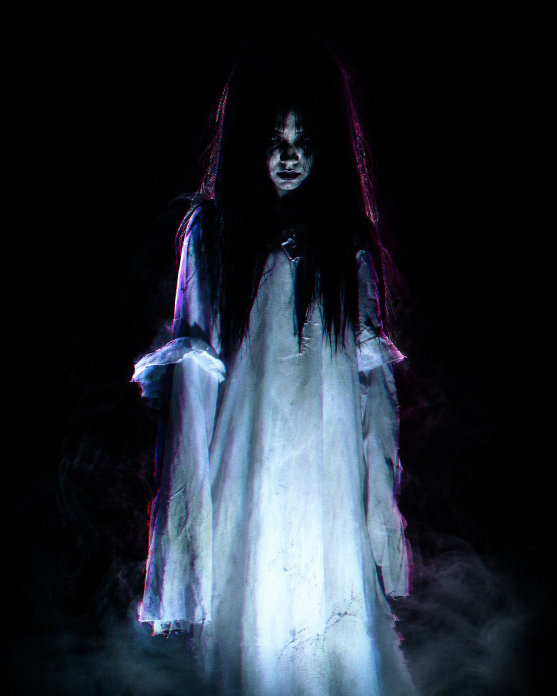

WebGIS 3D urban legend Jogja dengan rute berbasis OSM/fallback, arsip legenda, zona aman-rawan, haunted index, ambience horor, dan game relik yang lebih stabil.
Audio browser baru aktif setelah tombol ini diklik. Untuk demo, gunakan speaker/headset.
JANGAN ASAL KLIK

KUNTILANAK
🎮 MINI GAME: RELIK KUTUKAN
Cari 5 relik emas. Cari 5 relik emas. Jumpscare hanya muncul saat momen kritis: danger penuh atau jebakan fase akhir.